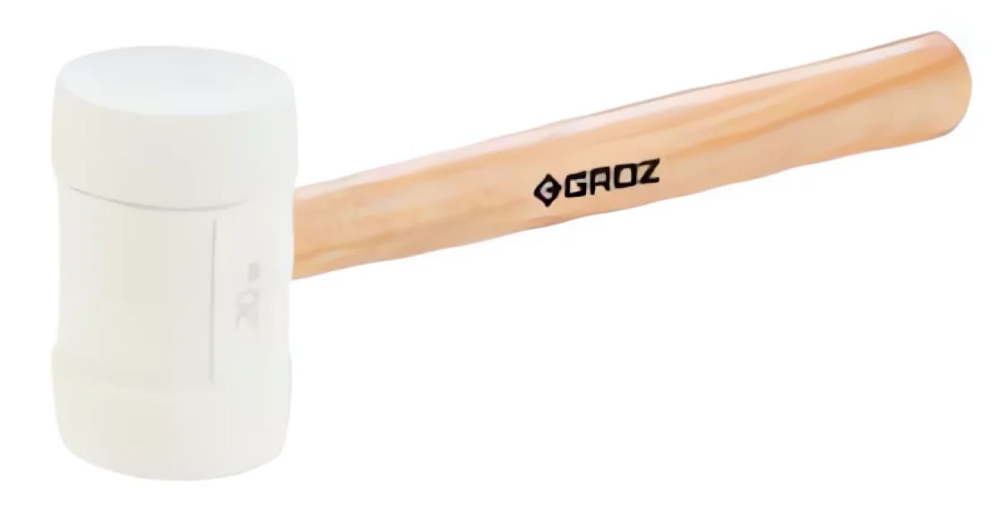

GROZ · Striking Tools
Rubber Mallets
CAT NR MLTR/20B/BW · ORD NR 34856
| CAT NR (catalogue number) | MLTR/20B/BW |
|---|---|
| ORD NR (order number) | 34856 |
| Box quantity | 12 |
| Head colour | Black |
| Head size (gms) | 567 |
| Head size (oz) | 20 |
| Table section | HARD WOOD HANDLE |
Open in the catalogue The catalogue PDF, page 44
From the GROZ Workshop Tools CB-05 catalogue. Not yet verified: these details were read from the printed catalogue automatically; check the catalogue page before ordering.